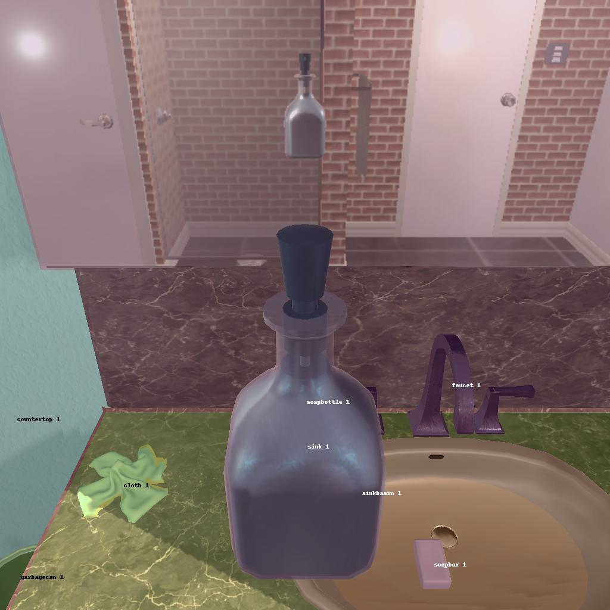

---------------------------------------------------------task: 27---------------------------------------------------------
--------------------------------------------------------------------------------------------------------------------------------------------------------------------
--------------------------------------------------------------------------------------------------------------------------------------------------------------------
Step:--------------------------------------------------------------------------19-------------------------------------------------------------------------------
----------------------------------------
VLM Prompt:
Image1:
Image2:
Image3:
**Instruction**
1. Analyze the provided image to identify all visible household objects, focusing on those relevant to the task description "find two soapbottle and put them in garbagecan."
2. Use the analysis of the image and the task hint "The agent must find an object of the desired type, pick it up, find the correct location to place it, put it down there, then look for another object of the desired type, pick it up, return to previous location, and put it down there with the other object." to answer the question: what is the most reasonable action in the choices for the task description "find two soapbottle and put them in garbagecan"?
4. Decide and write the answer using the template: The answer is: (i): , where i is the real number. If there is no desired object in the image, search every place based on **Initial Observation** to find the object. And if no one is exactly correct, choose a similar answer.
**Initial Observation**
You are in the middle of a room. Looking quickly around you, you can see countertop (1), sinkbasin (1-2), sink (1-2), garbagecan (1), drawer (1-2), toilet (1), handtowelholder (1)
**Answer Choices**
(1): go to sinkbasin 1
(2): go to garbagecan 1
(3): go to drawer 2
(4): go to sink 2
(5): go to sinkbasin 2
(6): go to toilet 1
(7): go to handtowelholder 1
(8): put soapbottle 1 in/on countertop 1
(9): examine soapbottle 1
(10): examine countertop 1
**Answer**
Let's think step by step by following the instructions.
----------------------------------------
----------------------------------------
Original Response:
First, we need to identify the soap bottles. In Image 1, we can see soapbottle 1 and soapbottle 3 clearly labelled on the countertop 1 near sinkbasin 1 and sinkbasin 2 respectively.
Next, we need to find the garbagecan to know where to put the soapbottles once we have picked them up. From the initial observation, we know there is a garbagecan 1 in the room.
Since the task description says "find two soapbottle and put them in garbagecan," the most reasonable action would be to first go to where the soap bottles are located. We can see soapbottle 1 in Image 1, which is near sinkbasin 1.
Therefore, the answer is: (1): go to sinkbasin 1.
----------------------------------------
----------------------------------------
>>> Refine Original VLM Response and Get Pure Action: No action
----------------------------------------
-----------------------------------------------------------------
Running time: 12.754354238510132 seconds
Total Money: 17.874450000000003
-----------------------------------------------------------------
-----------------------------------------------------------------
Text Observation:Nothing happens.
-----------------------------------------------------------------
UNSUCCEED